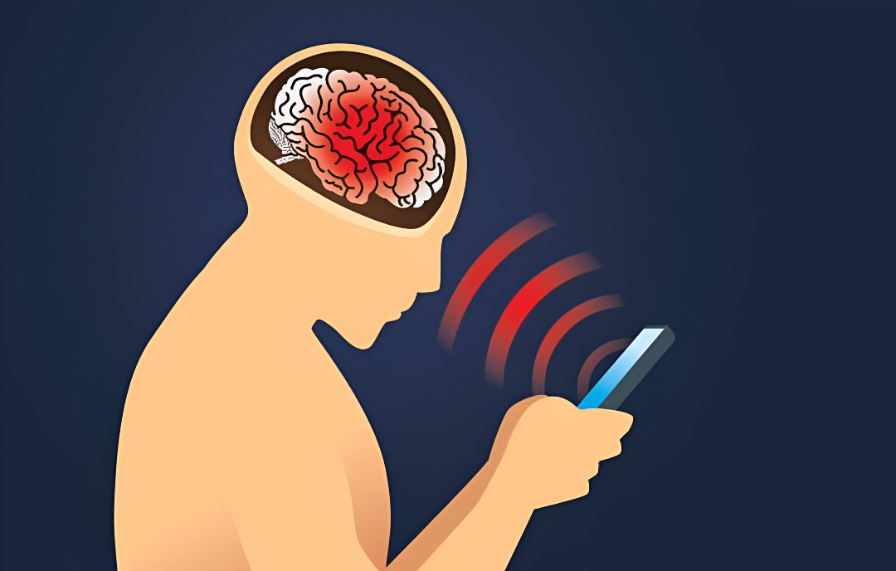
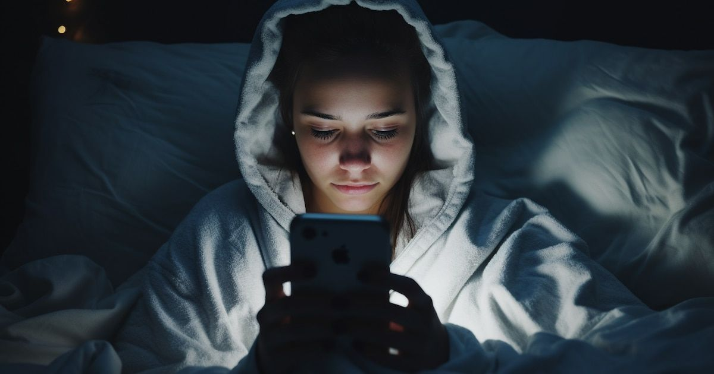

¿Hacen daño las pantallas?
Las pantallas no son malas por sí solas. El daño depende del tiempo de uso, la postura, el contenido y la edad. Si se usan bien, pueden ser útiles para aprender o entretenerse, pero el uso excesivo causa problemas.
1. Dispositivos tecnológicos y sus efectos en la salud
A continuación se presentan siete dispositivos de uso cotidiano que emplean pantallas. Cada uno aporta beneficios en el ámbito educativo, laboral o recreativo, pero también puede generar efectos negativos sobre la salud si se utiliza sin control o por periodos prolongados.
| Dispositivo | Ventajas (efectos positivos) | Desventajas (efectos negativos) |
|---|---|---|
| Teléfono celular | Facilita la comunicación y el acceso a información. Permite educación digital y organización personal. | Uso excesivo puede causar dependencia, ansiedad, problemas de sueño y fatiga visual. |
| Computador portátil | Herramienta esencial para el estudio, trabajo y aprendizaje a distancia. | Provoca sedentarismo, dolores musculares y sobrecarga visual si no se hacen pausas adecuadas. |
| Televisor | Permite entretenimiento, difusión cultural y aprendizaje audiovisual. | Exposición prolongada favorece el sedentarismo y afecta los hábitos de sueño. |
| Tablet | Portátil y útil para la lectura, educación y creatividad infantil. | Puede reducir la interacción social y causar sobreexposición visual en niños. |
| Consola de videojuegos | Estimula la coordinación, el pensamiento estratégico y la recreación. | Exceso de tiempo de juego puede generar adicción, aislamiento y fatiga mental. |
| Reloj inteligente | Favorece el control de la actividad física y monitoreo de la salud. | Uso constante puede aumentar la dependencia tecnológica y el estrés por notificaciones. |
| Pantalla interactiva escolar | Facilita el aprendizaje visual y la colaboración en clases. | Exposición prolongada sin pausas puede generar cansancio ocular. |
En conclusión, todos los dispositivos con pantalla aportan ventajas significativas para la educación, el trabajo y la comunicación, pero es indispensable regular el tiempo de uso y aplicar hábitos saludables para evitar efectos negativos sobre la salud.
Perjuicios para la salud
El uso excesivo de dispositivos con pantallas puede tener impactos significativos en distintas dimensiones de la salud física y mental. La literatura científica y las organizaciones de salud destacan una serie de riesgos que, aunque no se presentan en todos los usuarios, tienden a aumentar con la exposición prolongada y sin control.
1. Fatiga visual
La exposición continua a pantallas produce sequedad ocular, visión borrosa y dolores de cabeza. Esto se debe al menor parpadeo y al esfuerzo constante de enfoque.
2. Problemas de sueño
La luz azul de los dispositivos interfiere en la producción de melatonina, alterando los ritmos del sueño y reduciendo su calidad.
3. Sedentarismo
Pasar horas frente a pantallas limita el movimiento, favoreciendo el sobrepeso y afectando la circulación sanguínea.
4. Dolores musculares
Las posturas mantenidas, especialmente con el cuello inclinado hacia abajo, causan molestias en cuello, hombros y espalda.
5. Salud mental
El uso excesivo o inadecuado, sumado a la exposición a contenido negativo, puede derivar en ansiedad, estrés o depresión.
6. Falta de concentración
El uso constante de múltiples pantallas y notificaciones interrumpe la atención sostenida, reduciendo el rendimiento académico o laboral.
7. Miopía
Mirar objetos cercanos durante largos periodos se relaciona con un aumento en la incidencia de miopía infantil y juvenil.
Estos perjuicios no implican que el uso de pantallas deba eliminarse, sino que deben promoverse hábitos de autorregulación y pausas activas para prevenir sus consecuencias negativas.
Guías de la OMS
La Organización Mundial de la Salud (OMS) y otras entidades sanitarias han establecido orientaciones para un uso saludable de pantallas, especialmente en niños y adolescentes. Estas recomendaciones se basan en estudios que relacionan el tiempo frente a pantallas con el desarrollo físico, mental y social.
Tiempos por edad
- Menores de 2 años: Evitar pantallas, ya que interfieren con el desarrollo del lenguaje y las interacciones humanas.
- 2 a 5 años: Hasta 1 hora diaria, siempre acompañados de un adulto y priorizando contenido educativo.
- 6 a 12 años: 1 a 2 horas de ocio, con pausas y control del contenido. No deben reemplazar el sueño ni la actividad física.
- Adolescentes: Controlar horarios y espacios, fomentando el equilibrio entre estudio, descanso y socialización fuera de pantalla.
Consejos generales
- Usar la regla 20-20-20: cada 20 minutos mirar a lo lejos durante 20 segundos.
- Evitar pantallas al menos una hora antes de dormir para proteger el sueño.
- Mantener buena postura, con la pantalla a la altura de los ojos y luz ambiental adecuada.
- Priorizar contenidos de calidad y supervisar el uso en menores.
- Realizar actividad física diaria y disfrutar de tiempo al aire libre.
Estas guías promueven una educación digital responsable, integrando el uso de la tecnología de manera segura en la vida cotidiana y respetando el bienestar físico y psicológico.

Recomendaciones
Para reducir los efectos negativos de las pantallas, se deben adoptar rutinas saludables y conscientes. La clave está en la moderación, el descanso y el uso educativo o creativo de los dispositivos. Las siguientes medidas son sugeridas por especialistas en salud pública y ergonomía visual:
- Realizar pausas cada 30-40 minutos para relajar la vista y moverse.
- Evitar el uso de pantallas en la cama o durante las comidas familiares.
- Usar pantallas a una distancia de 50–70 cm y mantener el cuello erguido.
- Reducir el brillo y activar los modos de luz cálida por la noche.
- Incentivar actividades al aire libre y momentos sin tecnología.
- Fomentar el diálogo familiar sobre el tiempo de pantalla y su propósito.
El objetivo no es eliminar las pantallas, sino integrarlas de forma equilibrada en la rutina diaria, protegiendo la salud visual, física y mental.

Análisis
1. Efectos en la salud
El uso excesivo de pantallas genera múltiples efectos en la salud física, mental y social. Entre los más relevantes se encuentran la fatiga visual, producto del esfuerzo ocular continuo; las alteraciones del sueño debido a la exposición a la luz azul y la estimulación constante; el sedentarismo, que reduce el movimiento corporal y favorece el sobrepeso; y los dolores musculares derivados de posturas incorrectas o estáticas.
En el ámbito psicológico, el uso prolongado de dispositivos se asocia a niveles más altos de ansiedad, dificultad para concentrarse y problemas de interacción social, especialmente cuando las pantallas sustituyen el contacto personal o las actividades recreativas fuera de línea. También puede afectar la autoestima cuando los usuarios, sobre todo adolescentes, se exponen a comparaciones constantes en redes sociales.
Estos efectos no significan que el uso de pantallas deba eliminarse, sino que es necesario educar en hábitos digitales saludables, promoviendo la autorregulación, el uso consciente y el equilibrio entre la tecnología y las demás actividades cotidianas.
2. ¿Se debe regular el uso?
La regulación del tiempo de pantalla es esencial para proteger el bienestar físico y emocional. No se trata de prohibir, sino de establecer límites razonables y promover el uso responsable. Diversos organismos internacionales, como la Organización Mundial de la Salud (OMS) y la Academia Americana de Pediatría (AAP), recomiendan pautas claras según la edad y el tipo de actividad. Los niños pequeños requieren más interacción directa con su entorno físico, mientras que los adolescentes deben aprender a equilibrar su tiempo entre el estudio, la actividad física y el descanso.
Además, la regulación debe aplicarse también en el entorno educativo y familiar, fomentando el acompañamiento adulto, la selección de contenidos adecuados y la creación de espacios libres de pantallas (como el dormitorio o el comedor). De esta manera, se promueve una cultura digital sana que prioriza el desarrollo integral del individuo.
3. ¿Y te comprometes a regular el uso de la tecnología?
Piensa en tus propios hábitos con los dispositivos electrónicos. Reflexiona sobre qué podrías cambiar para cuidar mejor tu salud y mantener un equilibrio entre el mundo digital y la vida real. Escribe tu compromiso personal a continuación:
Fuentes
- Organización Mundial de la Salud (OMS)
- Academia Americana de Pediatría
- Asociaciones de oftalmología